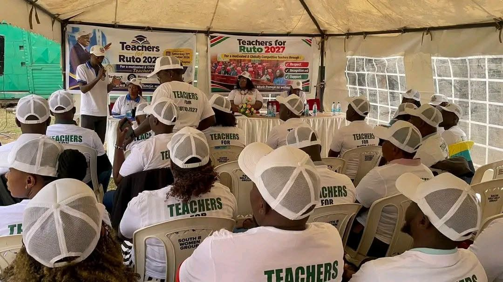
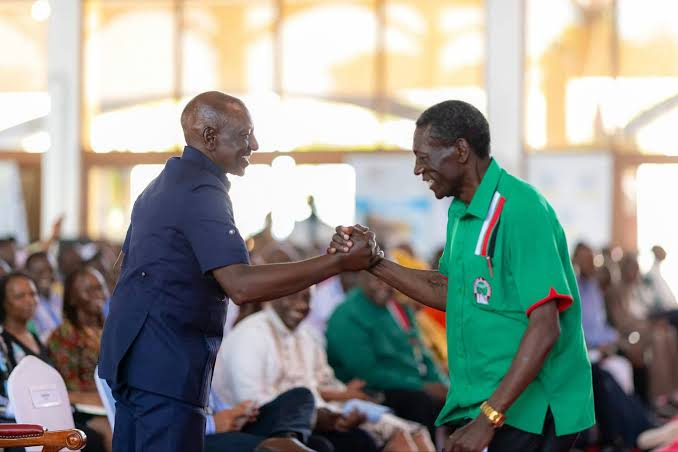

UNITY • REPRESENTATION • ENGAGEMENT
Teachers for Ruto
Movement (TRM)
Teachers for Ruto Movement (TRM) is a voluntary network of serving teachers, retired teachers and teacher trainees united in support of H.E. Dr. William Samoei Ruto's re-election for a second term in 2027. We believe that the progress made under his leadership deserves recognition and continuity. Our mission is to mobilise teachers across Kenya, promote awareness of the government's achievements, strengthen unity among supporters and champion the case for a second term in 2027..
JOIN THE MOVEMENT →OUR MEMBERSHIP ACROSS KENYA SO FAR
Public Projects Directory
Showing 6 projects
ONGOING / PROGRAMME
Teacher Recruitment and Employment Programme
Ministry of Education
The Teacher Recruitment and Employment Programme, spearheaded by the Ministry of Education, is an ongoing national initiative dedicated to strengthening staffing levels across Kenya’s public schools. By recruiting and deploying qualified educators, this vital programme reduces teacher shortages, supports Competency-Based Education delivery, and ensures every learner accesses quality, equitable education nationwide.
IMPLEMENTATION
NHIF-to-SHA Transition Programme
Ministry of Health
Led by the Ministry of Health, the NHIF-to-SHA Transition Programme is actively replacing the National Hospital Insurance Fund with the Social Health Authority. This transformative national reform establishes a modern social health insurance framework designed to broaden universal coverage, streamline healthcare financing, and ensure accessible, equitable medical care for all Kenyans.
LAUNCHED
Eastern Bypass Link and Pedestrian Overpasses
Ministry of Roads & Transport
Championed by the Ministry of Roads & Transport, the newly inaugurated **Eastern Bypass Link and Pedestrian Overpasses** initiative in Nairobi County transforms metropolitan connectivity and commuter safety. By alleviating chronic gridlock and establishing secure pedestrian crossings, this pivotal infrastructure streamlines thoroughfare access, mitigates road fatalities, and catalyzes regional economic vitality.
COMPLETED
Kajulu Water Treatment and Distribution Line
Ministry of Water & Sanitation
Spearheaded by the Ministry of Water & Sanitation, the newly completed Kajulu Water Treatment and Distribution Line in Kisumu County significantly upgrades regional water infrastructure. By modernizing purification systems and expanding supply networks, this essential initiative ensures reliable access to clean, safe drinking water, enhances public health, and supports sustainable community growth.
LAUNCHED
Coastal Digital Hub and Public Wi-Fi Zone
Ministry of ICT & Digital Economy
Launched by the Ministry of ICT & Digital Economy, the Coastal Digital Hub and Public Wi-Fi Zone in Mombasa County expands regional technological infrastructure. By providing free internet connectivity and youth digital skills training, this transformative initiative bridges the digital divide, fosters local innovation, and unlocks online economic opportunities for residents.
COMPLETED
Eldoret Market Access and Drainage Corridor
Ministry of Roads & Transport
Delivered by the Ministry of Roads & Transport, the newly completed Eldoret Market Access and Drainage Corridor in Uasin Gishu County modernizes essential urban infrastructure. By upgrading market access roads and constructing reliable stormwater drainage systems, this vital project prevents flooding, eases transportation for traders, and stimulates sustainable local economic growth.
LAUNCHED
Naivasha Community Borehole and Solar Scheme
Ministry of Water & Sanitation
Community water access and solar-powered water supply initiative.
COMPLETED
Rift Valley Maternal and Neonatal Wing
Ministry of Health
Maternal and newborn healthcare infrastructure initiative.
No matching projects found. Try another search.
Who We Are
Teachers for Ruto Movement (TRM) is a voluntary network of serving teachers, retired teachers and teacher trainees united around teacher mobilisation, solidarity, representation and constructive policy engagement.
We provide a platform for teachers to connect, share information, participate in conversations about education and contribute to national development.
TRM
Usawa ni Sawa, Mbele Pamoja!
Building a connected and informed teacher community through respectful engagement and shared purpose.
Mission & Key Focus Areas
Teacher Mobilisation
Connect teachers, grow participation and encourage informed involvement in the movement.
Unity & Solidarity
Promote mutual support, inclusion and a strong sense of community among educators.
Representation & Policy Engagement
Create constructive opportunities for teachers' perspectives and professional priorities to be heard.
Movement Management
Meet the national and county teams guiding the movement.
PHOTO
National Leadership
Profile, role and contact details to be added.
PHOTO
County Coordinators
County leadership profiles to be added.
STAY CONNECTED
Media Centre
Follow the movement's activities, announcements and stories.
FROM THE MOVEMENT
Latest News & Events
News stories and updates will appear here. Select a story to read more.
TEACHER ENGAGEMENT
Former Union Boss Wilson Sossion Sworn In as TSC Commissioner
Former Kenya National Union of Teachers (KNUT) Secretary-General Wilson Sossion has officially taken office as a Teachers Service Commission (TSC) Commissioner following a swearing-in ceremony at the Supreme Court of Kenya. Appointed alongside former TSC Director of Staffing Antonina Lentoijoni to a six-year term after presidential nomination, parliamentary vetting, and Gazette publication, Sossion now moves from union advocacy to helping regulate over 300,000 public school teachers nationwide. During vetting, he pledged to mend ties between the TSC and the Ministry of Education, curb corruption, cut red tape, and speed up delayed teacher pensions..

EDUCATIONAL NEWS
President Ruto Addresses School Heads in Mombasa on Education Reforms"
Addressing the Kenya Comprehensive Schools Heads Association (KCSHA) AGM at the Sheikh Zayed Children Welfare Centre in Nyali, Mombasa, President William Ruto outlined key education priorities: School funding: Higher allocations and timely releases. Comprehensive schools: Unifying primary and junior schools under one management structure to boost financing and learning. Teacher recruitment: 100,000 teachers already hired, with 20,000 more planned next month. Infrastructure: Building 23,000 classrooms for Competency-Based Education (CBE). Teacher welfare: Focus on promotions, career growth, and better welfare. Ruto emphasized building a competency-driven system that prepares learners to solve problems and turn ideas into practical solutions..
TRM ACTIVITIES
Kisii and Nairobi Teachers Launch Lobby Group Backing President Ruto for 2027 Re-election
A group of teachers in Kisii and Nairobi has officially launched a new lobby group dubbed the Teachers For Ruto Movement (TRM) to mobilize support for President William Ruto’s re-election bid in the 2027 General Election. Speaking at the launch, the group's organizers emphasized the need to rally behind the President to complete a second term in office, arguing that he has delivered on his commitments during his first term. The initiative marks an early push from a section of educators seeking to organize grassroots backing ahead of the 2027 polls..
Vacancies
Explore TSC recruitment portals, B.O.M opportunities and teacher transfer or swap listings.
TSC Recruitment & Employment
TSC Advertisements
Visit the Teachers Service Commission advertisements portal to view recruitment notices and vacancies.
VIEW TSC ADVERTISEMENTS ↗TSC HRMIS Portal
Access the TSC HRMIS portal for relevant teacher services.
OPEN HRMIS PORTAL ↗B.O.M Vacancies
Share an available school vacancy or register as a teacher seeking B.O.M employment.
Post a B.O.M vacancy＋
Register as a B.O.M job seeker＋
B.O.M Vacancy Listings
Listings submitted through this website.
Connect the vacancy database to display current listings.
Teachers Looking for B.O.M Employment
Teachers can mark their record as successfully placed.
Connect the vacancy database to display registered job seekers.
Transfers / Swaps
Register your current station and preferred destination to help identify potential matches.
Open teacher swap request form＋
Teacher Transfer & Swap Register
Search by subject, current station or preferred destination.
Connect the vacancy database to display teacher requests.
Privacy notice: Contact details submitted to this directory may be visible to visitors. Submit only details you consent to share. Records cannot be deleted by ordinary users. The website administrator manages record removal. Teachers may mark their own job-seeker record as successfully placed.